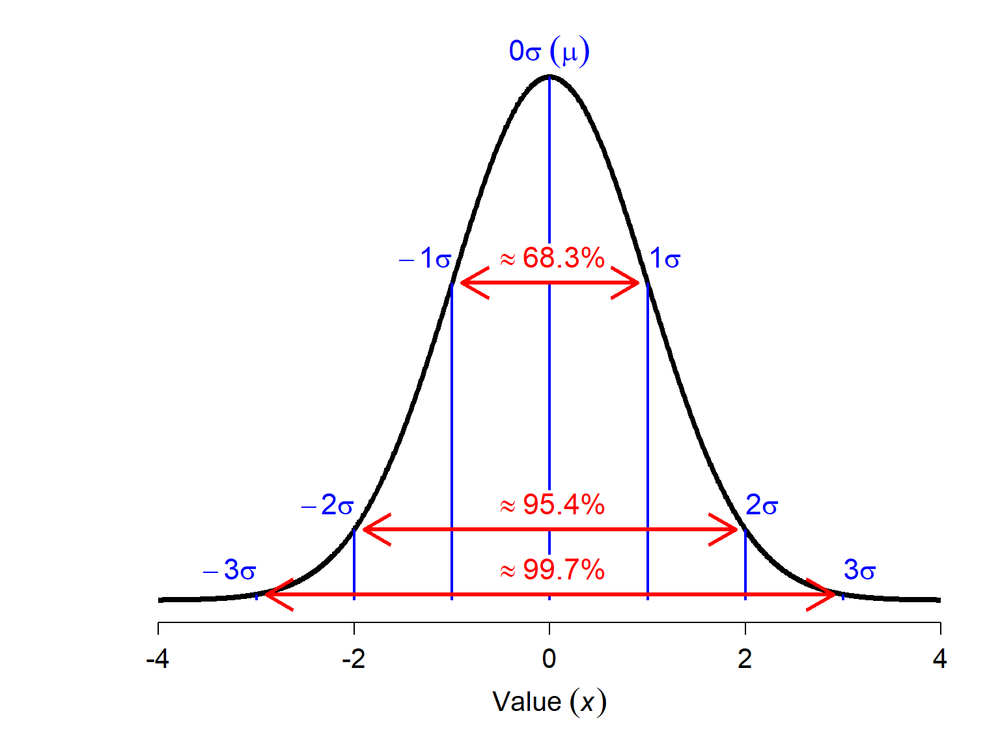
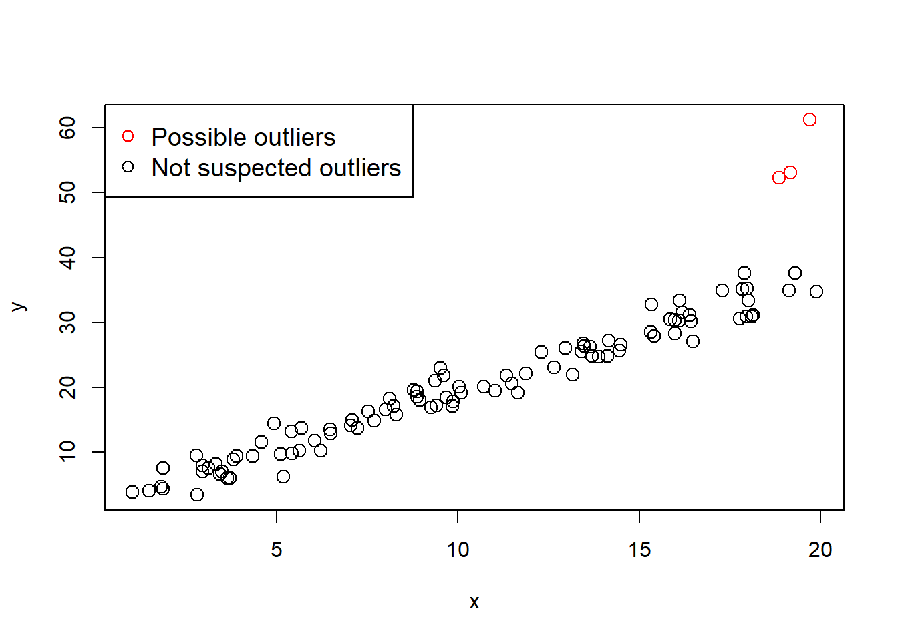
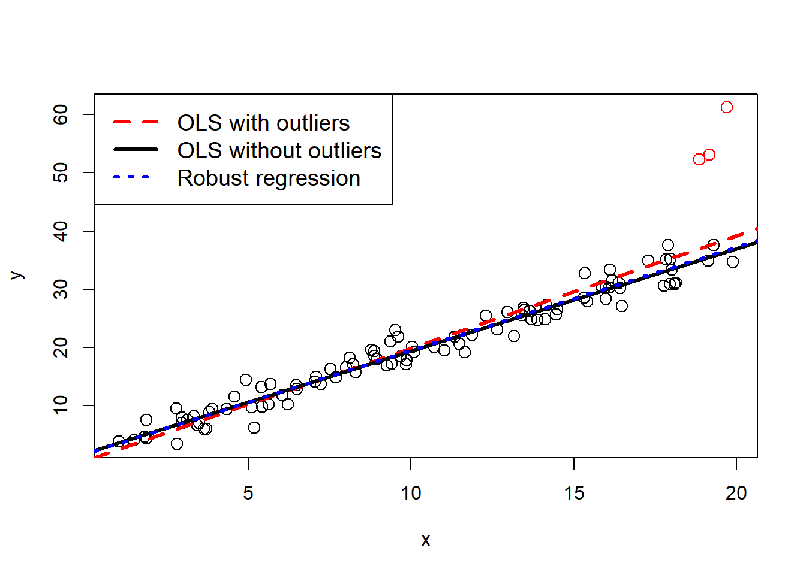
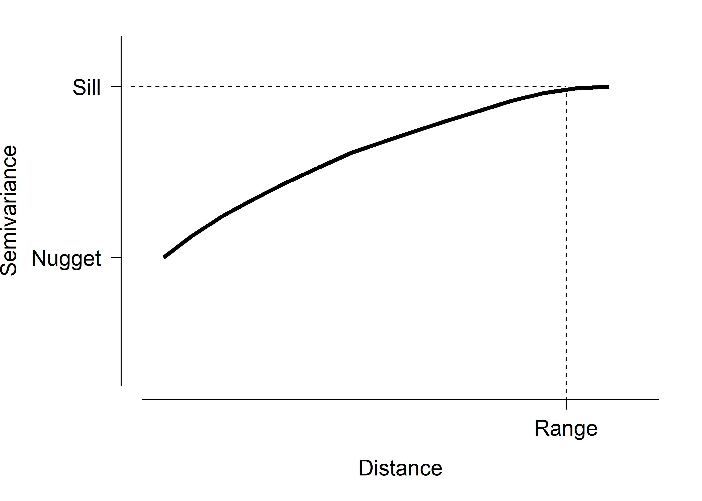
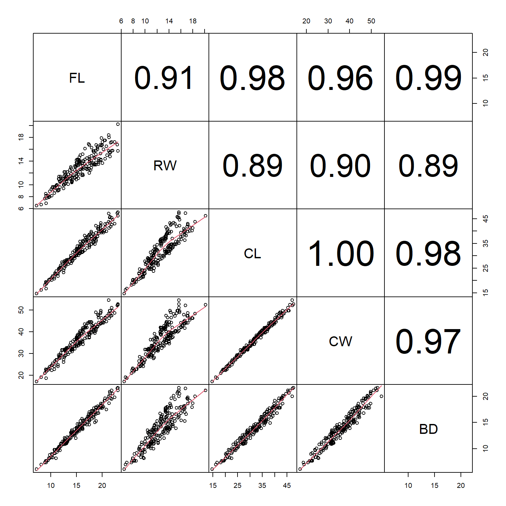

12 Common problems in biological data
Many statistical methods assume that data follow certain distributions, and we have already explored methods for making sure your data follow those distributions. Other problems are not so easy to diagnose or fix. This section will introduce you to some methods for dealing with more subtle data problems. Note that none of these issues have one-size-fits-all solutions. Dealing with these issues will require understanding your study system and thinking through the consequences of potential solutions.
12.1 Outliers and erroneous values
Outliers are values that much larger or smaller than other values in the data set. While these values are theoretically possible in any distribution, they are by their nature extremely unlikely. Outliers can cause problems with many statistical tests because they are often given undue weight. This is because deviations from the mean are often squared.
There are two problems with outliers: how to detect them, and what to do with them.
12.1.1 Detecting outliers
There are several definitions of outlier. Some researchers have suggested simple measures such as Z-scores to detect outliers. Z-scores measure how many standard deviations (SD) an observation is away from the mean. The Z-score of an observation \(x_i\) (observation i of variable x) is calculated as:
\[Z\left(x_i\right)=\frac{x_i-\bar{x}}{\sigma\left(x\right)}\]
where \(\bar{x}\) is the mean of x and \(\sigma\left(x\right)\) is the SD of x. For example, Z-scores of -2.3 and +4.1 indicate observations 2.3 SD below and 4.1 SD above the mean, respectively. Z-scores are also referred to as sigmas, referring to the symbol for SD. E.g., a 4\(\sigma\) observation is 4 SD away from the mean. Various \(\sigma\) levels have been used to detect outliers, in which researchers discard any observation 2\(\sigma\), 3\(\sigma\), etc., away from the mean. This threshold varies by discipline, so follow the conventions in your field.
The figure below shows Z-scores relative to the standard normal distribution (\(\mu\) = 0, SD = 1). About 68% of observations are expected to have a Z-score between -1 and 1–i.e., deviate by \(\le\) 1 \(\sigma\). About 95% of observations should be \(\le\) 2 \(\sigma\), and over 99% of observations should be \(\le\) 3 \(\sigma\). The greater the magnitude of a value’s Z-score, the less likely it is. Values with > 3 or 4 \(\sigma\) should almost never occur. Thus, observations with large-magnitude Z-scores may turn out to be outliers.
It must be noted that a large magnitude Z-score does not prove that an observation is an outlier. Like p-values, Z-scores are just a heuristic for making decisions. Don’t just delete any observation \(|Z|\ge\) 3; examine those observations to see if they are legitimate and don’t take any action without a good biological reason.
12.1.2 Dealing with outliers
12.1.2.1 Deletion
The easiest way to deal with outliers is simply to delete them. This can be fine if you have a lot of data–many 1000s or even millions of records. I’ve worked with several statisticians who routinely delete observations with response variables in the top and bottom 5 percentiles. This may not always be an appropriate strategy in biology. For one thing, outliers can occur for completely legitimate reasons and deleting them would be discarding important information about the study system.
Never delete an observation based solely on its magnitude.
Data should only be deleted when there is a biological or experimental reason. These might include experimental errors, inappropriate sampling, extraordinary field conditions, etc. Furthermore, you should always document when observations were deleted and why, and disclose that information in your write up and to reviewers. The possibility of including supplemental information or documents with manuscripts leaves little excuse not to be transparent about what observations you deleted and why.
12.1.2.2 Truncation and censoring
Censoring and truncation are options for dealing with extreme values. Censoring data in statistics means analyzing data as either the measured value or the interval in which the value falls. For example, if a mouse is weighed with a scale that goes up to 60 g, and maxes out the scale, we record the mouse as weighing \(\ge60\) g. Statistical methods for censored data have been developed but are outside the scope of this course. One popular form of censoring is called Winsorizing, where values below the 5th percentile are set to the 5th percentile and values above the 95th percentile are set to the 95th percentile. Censoring is common practice in fields involving certain types of instrumentation. For example, many spectrophotometers (e.g., microplate readers) record optical density (OD) as the amount of light passing through a specimen as a measurement of concentration. Most machines have a lower limit to the OD that they can detect. Observations below this minimum OD might be censored to 0, or to some pre-determined fraction of the minimum detectable OD.
Similar to censoring, outlying data can be removed by truncation. Truncation in statistics means ignoring values outside of a certain range. As with deletion, you must be very explicit about what criteria were used to truncate the data. Just as with deletion:
Never remove an observation based solely on its magnitude.
12.1.2.3 Transformation
Another way to deal with outliers is to transform the data. Variance-stabilizing transformations, such as the log-transform, often have the side-effect of reducing the influence of outliers in the data.
12.1.2.4 Weighting
Weighting is a strategy where observations can be given greater or lesser weight to adjust how much influence they have. In ordinary least squares regression, every observation contributes equally to the sum of squared residuals. Weighted regression instead minimizes a weighted sum,
\[\sum_i^n{w_i\left(y_i-\hat{y_i}\right)^2}\]
where observations with smaller weights \(w_i\) have less influence on the fitted models.
Weighting is most straightforward when the weights are known for some external reason. For example, an observation measured with high precision might reasonably receive more weight than an observation measured with low precision. Choosing weights simply because observations appear to be outliers is more difficult, because arbitrary weights can produce arbitrary results.
One approach that formalizes this idea is robust regression. Robust regression is a category of techniques that reduces the influence of extreme observations. The most famous version is probably least absolute deviations regression, which uses absolute rather than squared deviations. Below we see a version called Huber M-estimator regression, which uses iteratively-weighted least squares to arrive at a model in which observations with small residuals receive full weight, while observations with larger residuals are progressively downweighted.
Here is an example of using Huber regression to fit a linear model with less weight given to extreme values:
# simulate some data
# according to linear model
set.seed(123)
x <- sort(runif(100, 1, 20))
ey <- 1.5 + 1.8*x
y <- rnorm(100, ey, 2)
# add a few extreme observations
outliers <- c(95, 97, 99)
y[outliers] <- y[outliers] + 20
pt.cols <- rep("black",100)
pt.cols[outliers] <- "red"
# make a plot
plot(x,y, col=pt.cols, cex=1.4)
legend("topleft", legend=c("Possible outliers", "Not suspected outliers"),
col=c("red", "black"), cex=1.2, pch=1)
Let’s compare ordinary regression with the possible outliers (mod1), ordinary regression without the possible outliers (mod2), and robust regression (mod3).
my.dat <- data.frame(y=y, x=x)
mod1 <- lm(y ~ x, data=my.dat)
mod2 <- lm(y ~ x, data=my.dat[-outliers,])
mod3 <- MASS::rlm(y ~ x, data=my.dat)
plot(x, y, col=pt.cols, cex=1.4)
abline(mod1, lwd=3, col="red", lty=2)
abline(mod2, lwd=3)
abline(mod3, lwd=3, col="blue", lty=3)
legend("topleft",
legend=c("OLS with outliers",
"OLS without outliers",
"Robust regression"),
lwd=3, lty=c(2,1,3),
col=c("red","black","blue"),
cex=1.2)
The robust regression finds a line very similar to the model without the outliers, but does so without discarding data.
12.1.2.5 Alternative strategies
Finally, researchers can use analysis strategies that are less sensitive to outliers. As mentioned above, there are is a large class of robust statistics that use different strategies to give suspected outliers much less influence than under conventional methods based on sums of squared errors. Nonparametric methods, particularly those based on rank order, can also be less sensitive to outliers.
Whatever strategy you choose to deal with your outliers, you need to be aware of how much your decision affected the outcome. It is a good idea to analyze your data both with and without suspected outliers to measure how much influence they really have. If the analysis returns the same results with and without the outliers, leave them in.
12.2 Autocorrelation
Autocorrelation describes a phenomenon where set of values is correlated with itself, with the strength of that correlation determined by the distance between observations. In biology, the “distance” that defines autocorrelation is often spatial, temporal, or phylogenetic.
| Autocorrelation type | Distance measure | Explanation |
|---|---|---|
| Spatial | Space (e.g., km) | Samples from sites that are close together in space are more similar to each other than they are to sites that are farther away, just because they are closer to each other. |
| Temporal | Time (e.g., days) | Observations taken closer together in time are more similar to each other than they are to observations separated by more time. |
| Phylogenetic | Relatedness | Taxa that share a more recent common ancestor (i.e., are more closely related) are more similar to each other than they are to taxa that are less closely related to each other. |
The main consequence of autocorrelation is similar to the problems associated with pseudoreplication: because observations are not independent, the statistically relevant number of observations (degrees of freedom) is smaller than the nominal number of observations. This means that the power of the test is inflated. A related idea is that the residuals of a statistical model can be autocorrelated. In that case, the model violates the assumption of independent residuals shared by most statistical methods. Autocorrelation can be controlled for if you have some idea of its source and nature.
12.2.1 Graphical methods to identify autocorrelation
One way to explore potential autocorrelation is to construct a variogram. A variogram plots the squared differences between samples against their distance (temporal, spatial, etc.). A semivariogram uses half of that variance. An example semivariogram is below.
This figure shows some important quantities on the semivariogram:

{alt-text: “Schematic semivariogram with distance on the x-axis and semivariance on the y-axis. A curved line begins above zero at the labeled nugget, increases with distance, and levels off at the labeled sill. A vertical dashed line marks the range, where the curve reaches the sill.”}- Nugget: The variance or semivariance at 0 or very short distance. This represents other sources of error, such as sampling error, demographic stochasticity, etc.
- Sill: The variance or semivariance at which the curve gets close to its maximum or asymptotic value.
- Range: The distance at which the variance or semivariance reaches the sill. Samples at distances beyond the range are considered no longer spatially autocorrelated.
Semivariograms should always increase, at least initially, because closer observations should be similar to each other simply as a matter of proximity. Samples separated by distances less than the range are autocorrelated. Semivariograms sometimes reach a peak and then start decreasing, or varying up and down. The initial peak is usually interpreted as the sill, and the distance when the curve reaches the sill is considered the range. The importance and interpreation of the semivariogram is something that you, as a biologist, have to figure out.
12.2.2 Mantel tests for autocorrelation
Spatial autocorrelation is an ever-present problem for ecologists and environmental biologists: observations that are closer together in space might be similar to each other in terms of biology, just because they are closer together. The cause of that spatial autocorrelation determines how you need to deal with it in your analysis.
The fact that observations close together in space tend to be more similar is not in and of itself a problem. There can be a strong spatial structure in the data that is explained by predictors like latitude, longitude, or some environmental gradient. In other words, the spatial structure may be what you are trying to discover in the first place.
Where spatial structure becomes a problem is in the residuals of your analysis. If the residuals contain spatial structure after accounting for environmental and other predictors, then there is a problem called “lack of independence”. This means that observations contain less independent information than the model assumes. Consequently the analysis is conducted with more degrees of freedom than there really are. This inflates the power of the test, increasing the possibility of a false positive (a Type I error).
Historically, biologists often used a Mantel test to test for spatial autocorrelation in the response variable. Briefly, the Mantel test can be thought of as a multivariate generalization of linear correlation that measures correlation between two matrices. Whereas linear correlation measures how variation in one variable is related to variation in another variable, the Mantel test measures how variation in one matrix is related to variation in another matrix. But given what you just read, you should now recognize that as insufficient:
- autocorrelation in response values is not necessarily a problem if it can be modeled by predictor variables;
- autocorrelation in model residuals is where the problem lies; and,
- a Mantel test can fail to detect distance decay in response values, even when residuals are spatially dependent.
Nowadays, we have a tests specifically designed for measuring spatial autocorrelations. One of the most common is Moran’s I. This is a common measure of spatial autocorrelation that is easy to interpret: \(I>0\) means that nearby observations are more similar than expected; \(I\approx0\) means little evidence of spatial autocorrelation; and \(I<0\) means that nearby observations tend to be more dissimilar to each other than expected.
The “than expected” part refers to the amount of similarity expected if the values were distributed randomly with respect to the specified spatial relationships among observations..
We will illustrate use of Moran’s I in a future module. For now, the basic procedure is to:
- Define spatial weights for each pair of observations (a kind of distance matrix). These could be based on a distance threshold, nearest neighbors, or geographic distance.
- Fit your model (regression, GLM, or whatever).
- Test for spatial autocorrelation of the model residuals by calculating Moran’s I using the spatial weights. One option is the function
spdep::moran.test().
12.2.3 Dealing with autocorrelation
If you detect significant autocorrelation, don’t panic. Autocorrelation may or may not be a problem in your dataset. As pointed out by Kuehn and Dormann (2012), there is a difference between autocorrelation in a response variable and autocorrelation in the residuals of a statistical model. Autocorrelation in a response variable can be managed by inclusion of appropriate predictor variables. This works because if autocorrelated values can be predicted by a predictor variable, then it won’t be present in the residuals.
Autocorrelation in residuals, however, represents spatial structure that is not accounted for by the model. There are methods for accounting for autocorrelated residuals such as generalized least squares models (GLS) with spatial correlation structures (Zuur et al. 2007), conditional autoregressive models (CAR) (Gelfand and Vounatsou 2003), and mixed models that explicitly account for spatial dependence (Bolker et al. 2009). Other approaches may incorporate spatial predictors or smooth spatial trends directly into the model. None of these solutions is appropriate for every situation, so consider the likely cause and spatial scale of the autocorrelation, the goals of the analysis, and what your data can support.
12.3 Collinearity
Sometimes we face the problem of having predictor variables that are not only related to the response variable, but also related to each other. This phenomenon is called collinearity. In large datasets the problem becomes multicollinearity, when many variables are related to each other. Including collinear predictor variables in an analysis can severely bias the parameter estimates of that analysis (e.g., regression coefficients) and as a result make the results misleading or not generalizable. The effects of collinear predictor variables are by definition confounded with each other, meaning that the effects cannot be separated (Dormann et al. 2013).
The most straightforward way of detecting collinearity is with scatterplot matrices and correlation coefficients (see Section 8.3.1). This is a technique to visualize how many variables in a dataset relate to each other simultaneously. As shown in the linked section, replacing the upper triangle of boxes with the correlation coefficients can help detect potentially problematic pairs of variables. The figure below shows an example from the crabs dataset in package MASS. In this dataset, all of the variables are highly correlated with each other. Using more than one of them as a predictor in a model would make it hard for the algorithm to distinguish their effects from each other.

If you have many variables, then a figure like the one above can be hard to read or interpret. One solution might be to create a table of correlation coefficients between every pair of variables. The base function cor() can do this, but a better-formatted table takes a little more work.
data(crabs, package="MASS")
x <- crabs
dat.cols <- 4:8
cor(x[,dat.cols]) FL RW CL CW BD
FL 1.0000000 0.9069876 0.9788418 0.9649558 0.9876272
RW 0.9069876 1.0000000 0.8927430 0.9004021 0.8892054
CL 0.9788418 0.8927430 1.0000000 0.9950225 0.9832038
CW 0.9649558 0.9004021 0.9950225 1.0000000 0.9678117
BD 0.9876272 0.8892054 0.9832038 0.9678117 1.0000000# same table as a data frame:
vars <- names(x)[dat.cols]
# generate every unique pair of two variables by name:
cx <- data.frame(t(combn(vars, 2)))
# calculate correlation coefficients for each pair:
cx$r <- NA
for(i in 1:nrow(cx)){
cx$r[i] <- cor(x[,cx$X1[i]], x[,cx$X2[i]])
}
cx X1 X2 r
1 FL RW 0.9069876
2 FL CL 0.9788418
3 FL CW 0.9649558
4 FL BD 0.9876272
5 RW CL 0.8927430
6 RW CW 0.9004021
7 RW BD 0.8892054
8 CL CW 0.9950225
9 CL BD 0.9832038
10 CW BD 0.9678117The resulting table can then be sorted or filtered by r to identify pairs of variables that are correlated with each other.
# not run:
# filter to |r| > 0.7
cx[which(abs(cx$r) > 0.7),]Dormann et al. (2013) suggest to use a cutoff of \(|r|\) in between 0.5 and 0.7 to identify collinear pairs of variables. When a pair of variables are identified as collinear, the easiest solution is to simply run the analysis without one of them. This is because the variables are redundant, and any conclusions made using one would also be obtained using the other.
12.4 Missing data
The last target of exploratory data analysis that we will explore is missing data. Data can be missing for many reasons. Equipment failures, human error, natural disasters, and other causes can cause values in your dataset to go missing or otherwise be invalid. How to handle the missing data is up to you as a biologist: there is no one-size-fits-all statistical solution. The two basic ways to deal with missing data are to (1) not deal with it and (2) estimate the missing values.
12.4.1 Option 1: Ignore missing data
The easiest solution is simply to ignore missing data. Consider this dataset, which contains morphological data on 63 species of bats (Hutcheon et al. 2002). Notice that in this version the brain masses (brw) are missing for 3 species of bats.
# replace with your working directory and path!
in.name <- "../datasets/missing-data-example.csv"
dat <- read.csv(in.name, header=TRUE)Because there are a lot of data, one option for analyzing this dataset would be to simply ignore the missing observations. For example, if someone was interested in the relationship between body size (variable bow) and brain mass, they could just fit a model and R would (for most methods) automatically ignore missing values. Note that in this example both variables are log-transformed to ensure normality and positivity.
dat$logbw <- log(dat$bow)
dat$logbr <- log(dat$brw)
mod1 <- lm(logbr~logbw, data=dat)
summary(mod1)
Call:
lm(formula = logbr ~ logbw, data = dat)
Residuals:
Min 1Q Median 3Q Max
-0.82879 -0.16408 0.05009 0.19548 0.35881
Coefficients:
Estimate Std. Error t value Pr(>|t|)
(Intercept) 3.96599 0.09476 41.85 <2e-16 ***
logbw 0.75322 0.02881 26.14 <2e-16 ***
---
Signif. codes: 0 '***' 0.001 '**' 0.01 '*' 0.05 '.' 0.1 ' ' 1
Residual standard error: 0.2616 on 58 degrees of freedom
(3 observations deleted due to missingness)
Multiple R-squared: 0.9218, Adjusted R-squared: 0.9204
F-statistic: 683.4 on 1 and 58 DF, p-value: < 2.2e-16The parameter estimates of intercept = 3.9659 and slope = 0.7532 are very close to the values obtained using the full dataset of 3.9685 and 0.7516. In this case, ignoring the missing data worked just fine.
12.4.2 Option 2: Interpolate or impute missing data
If you need to replace the missing data, then the best option is to interpolate or impute them. How exactly to do this depends on the question being asked. If there is a clear relationship between the variable with missing values and another variable, then you can use that relationship to estimate the missing values. You can also use multiple imputation to estimate the missing values using information from several related variables at once. The example below illustrates simple interpolation (aka: single imputation) to replace the missing brain weights using known body masses.
# flag missing observations
flag <- which(is.na(dat$brw))
# log transform (if not done already)
dat$logbw <- log(dat$bow)
dat$logbr <- log(dat$brw)
# fit model
mod1 <- lm(logbr~logbw, data=dat)
# predict missing logbr at logbw
px <- data.frame(logbw=dat$logbw[flag])
pr <- predict(mod1, newdata=data.frame(px))
# insert predicted values
dat$logbr[flag] <- pr
# back-transform to original scale
dat$brw[flag] <- exp(dat$logbr[flag])The interpolated values are similar to the true values, but with quite a bit of error. The term of art here is “correct to an order of magnitude”.
dat$brw[flag][1] 729.7784 507.7160 2138.6809true.vals <- c(597, 543, 2070)
# percentage bias in interpolated values:
100 * (dat$brw[flag]-true.vals) / true.vals[1] 22.240932 -6.497972 3.317919Interpolation can be improved by predicting the missing values using additional variables. Multiple imputation, like any statistical model, can suffer from the effects of multicollinearity in the “predictors”, so be mindful that you don’t obtain–and use–biased estimates of your missing values. Penone et al. (2014) reviewed some strategies for imputing missing data in the context of life history traits, but the approaches could be applied to other areas of biology.
Bolker BM, Brooks ME, Clark CJ, Geange SW, Poulsen JR, Stevens MHH, White J-SS. 2009. Generalized linear mixed models: A practical guide for ecology and evolution. Trends in Ecology & Evolution 24(3):127–135. https://doi.org/10.1016/j.tree.2008.10.008
Dormann CF, Elith J, Bacher S, Buchmann C, Carl G, Carré G, Marquéz JRG, Gruber B, Lafourcade B, Leitão PJ et al. 2013. Collinearity: A review of methods to deal with it and a simulation study evaluating their performance. Ecography 36(1):27–46. https://doi.org/10.1111/j.1600-0587.2012.07348.x
Gelfand AE, Vounatsou P. 2003. Proper multivariate conditional autoregressive models for spatial data analysis. Biostatistics 4(1):11–15. https://doi.org/10.1093/biostatistics/4.1.11
Hutcheon JM, Kirsch JAW, Jr TG. 2002. A comparative analysis of brain size in relation to foraging ecology and phylogeny in the Chiroptera. Brain, behavior and evolution 60(3):165–180. https://doi.org/10.1159/000065938
Kuehn I, Dormann CF. 2012. Less than eight (and a half) misconceptions of spatial analysis. Journal of Biogeography 39(5):995–998.
Penone C, Davidson AD, Shoemaker KT, Di Marco M, Rondinini C, Brooks TM, Young BE, Graham CH, Costa GC. 2014. Imputation of missing data in life-history trait datasets: Which approach performs the best? Methods in Ecology and Evolution 5(9):961–970.
Zuur AF, Ieno EN, Smith GM. 2007. Analysing ecological data. New York: Springer Science+Business Media.